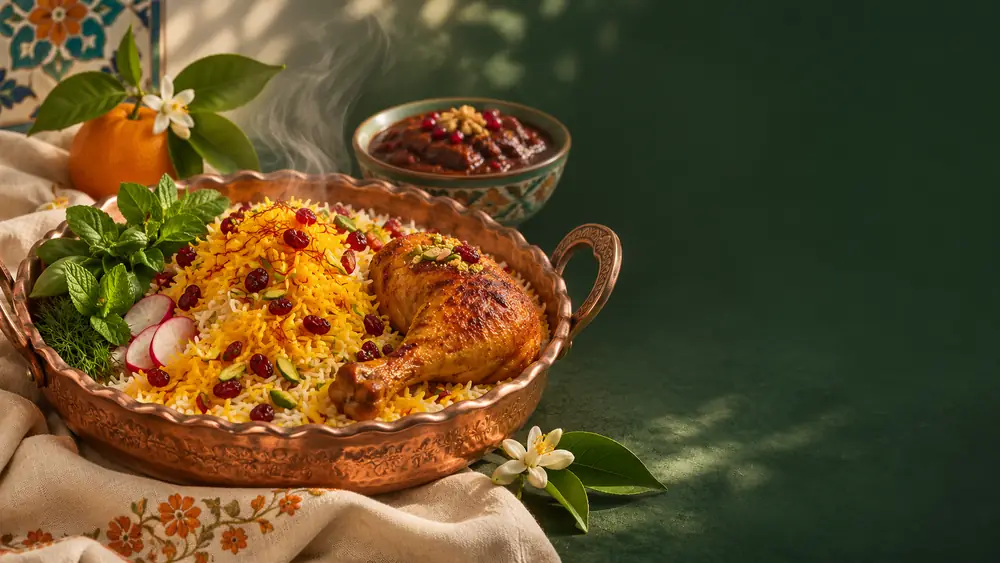
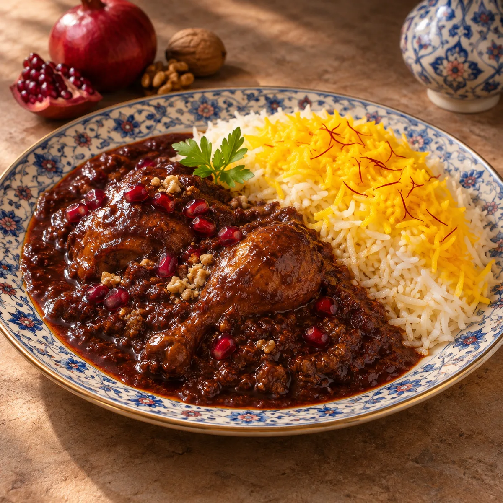

01پیشنهاد سفرهزرشکپلو با مرغ
برنج زعفرانی، زرشک خوشعطر و مرغ برشته؛ ترکیبی آشنا برای یک وعده ایرانی.
قیمت در منوی نهایی درج میشود
THE NARENJ MENU · منوی نارنج
از عطر برنج زعفرانی تا طعم خورشهای ایرانی؛ پیشنهادهایی برای آشنایی با سفرهای که قرار است دور آن جمع شویم.

نارنجطعم ایرانیآشنایی با طعمها
منوی یک رستوران باید انتخاب را برای مهمان آسان کند. به همین دلیل، غذاها در این صفحه با تصویر، توضیح کوتاه و دستهبندی روشن نمایش داده میشوند تا بازدیدکننده پیش از مراجعه، دید بهتری از پیشنهادها داشته باشد.
غذاها و توضیحات فعلی نمونهاند و برای نسخه نهایی باید با منوی واقعی، مواد تشکیلدهنده، قیمتها و اطلاعات حساسیتزا جایگزین شوند.


THE NARENJ EXPERIENCE
با داستان نارنج و فضای پیشنهادی آن آشنا شوید؛ از نگاه به طعمهای ایرانی تا جزئیاتی که یک دورهمی را دلنشین میکنند.
داستان نارنج ↖